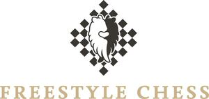

Trade Mark Journal No.2025/049 5 December 2025
WO0000001870245 (25,35,41)
Office of origin: Germany
Date of International Registration:27 February 2025
Date of designation in the UK:
27 February 2025

The mark contains the colours Black, white, gold.
International priority date claimed: 27 August 2024
(Germany)
- Class 25
- Clothing; footwear; headgear; tee-shirts; sweat shirts; tracksuit bottoms; sweatshirts; suits; sports jerseys; waistcoats; headscarves; shirts; hats; caps being headwear; baseball caps; gloves [clothing]; stockings; slippers; dressing gowns; denim jeans; pyjamas; clothing for children; sweaters; jogging sets [clothing]; waterproof clothing; wind resistant jackets; overcoats; jackets [clothing]; socks; fleece tops [clothing]; waist belts; polo shirts; dresses; hosiery; swimwear; shorts; blouses; cardigans; coats; trousers; aprons; shawls; overalls; dancewear; unitards; leggings; shoes; boots; training shoes; sandals; bandanas; scarves; neckties; bow ties.
- Class 35
- Event marketing; commercial administration of the licensing of the goods and services of others; sponsorship search consultancy services; organisation and conducting of promotional and marketing events; arranging of contracts for the implementation of advertising events for third parties; implementation of promotional events; sales promotion for others; promoting the goods and services of others through advertisements on internet websites; creative marketing plan development services for sports and entertainment events [event marketing]; retail services, including online, in relation to pocket knives with multi-purpose functions, compact discs, compact discs [read-only memory], computer software and apps for chess games, DVDs, DVD-ROMs, interactive software for entertainment purposes, interactive video game programs, optical data media, audio visual recordings, sunglasses, fridge magnets, clocks, watches, pins, stationery, address books, albums, stickers for stationery, pencils, writing paper, books, comics, fountain pens, gift wrapping, gift tags, ball pens, bookmarkers, rulers, magazines, office binders, note books, postcards, posters, placards, erasers, transfers [decalcomanias], writing tablets, travelling trunks, suitcases, handbags, dog leashes, shopping bags, briefcases, travelling trunks, suitcases, handbags, dog leashes, shopping bags, briefcases, umbrellas, parasols, walking sticks, document folders, wallets, furniture, drinking vessels, drinking bottles, bottle openers, electric and non-electric, corkscrews, electric and non-electric, tableware, except forks, knives and spoons, heat-insulated containers for beverages, mugs, cups, table plates, soup bowls, glasses, clothing, footwear, headgear, tee-shirts, tracksuit bottoms, sweatshirts, suits, sports jerseys, waistcoats, headscarves, shirts, hats, caps being headwear, baseball caps, gloves [clothing], stockings, slippers, dressing gowns, denim jeans, pyjamas, clothing for children, sweaters, jogging sets [clothing], waterproof clothing, wind resistant jackets, overcoats, jackets [clothing], socks, fleece tops [clothing], waist belts, polo shirts, dresses, hosiery, swimwear, shorts, blouses, cardigans, coats, trousers, aprons, shawls, overalls, dancewear, unitards, leggings, shoes, boots, training shoes, sandals, bandanas, scarves, neckties, bow ties, toys, games, board games, parlour games, chess games, chessboards, chess pieces, electronic games, craft kits for toys and play figures, manipulative games, gymnastic and sporting articles, game cases, lighters; retail services, including online, in relation to tickets [admission tickets].
- Class 41
- Organization and implementation of sporting and cultural events and activities; organising, holding and conducting competitions, in particular chess tournaments and sporting competitions; all of the aforementioned services also as virtual and non-live events via streaming and video-on-demand; ticket agency services [entertainment]; organizing ticket reservations for entertainment and sporting events, including virtual events such as streaming, video-on-demand and other online or non-live events; ticket reservation services for sporting and cultural events and activities, competitions, in particular chess tournaments and sporting competitions, also as virtual events such as streaming, video-on-demand and other online or non-live events; reservation services for tickets and seat reservations for sporting and cultural events and activities, competitions, in particular chess tournaments and sports competitions, also as virtual events such as streaming, video-on-demand and other online or non-live events; provision of non-downloadable games on the Internet; providing rooms for entertainment purposes, namely sporting events and competitions, and chess tournaments.
JHB Chess Holding GmbH
Representative: Heuking Kühn Lüer Wojtek PartGmbB, Neuer Wall 63, 20354 Hamburg, GERMANY